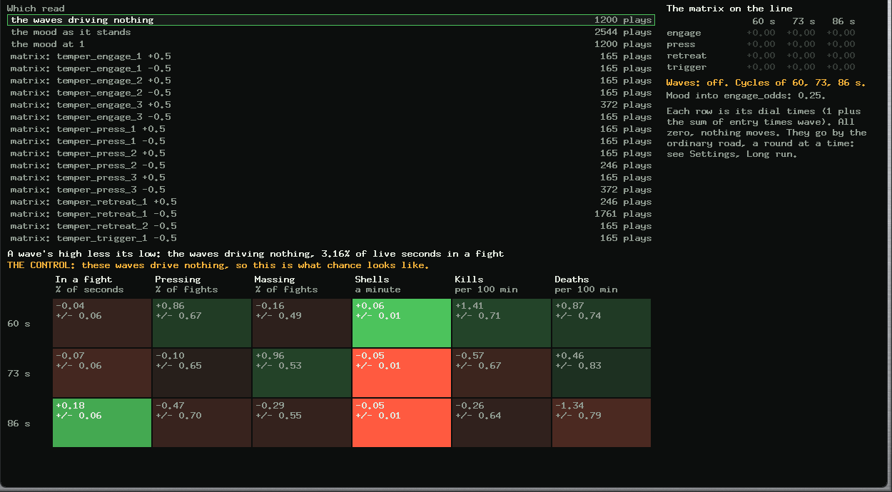
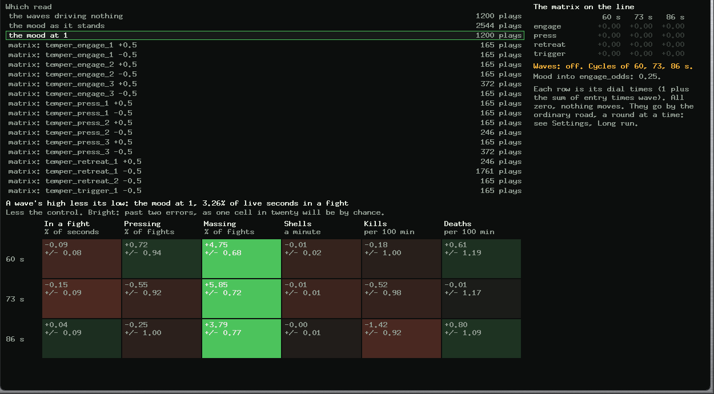
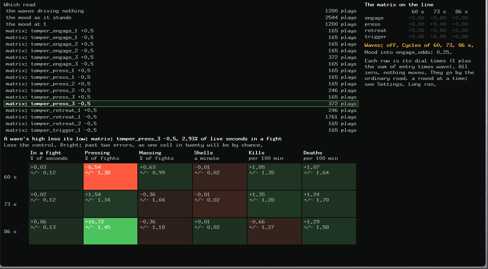
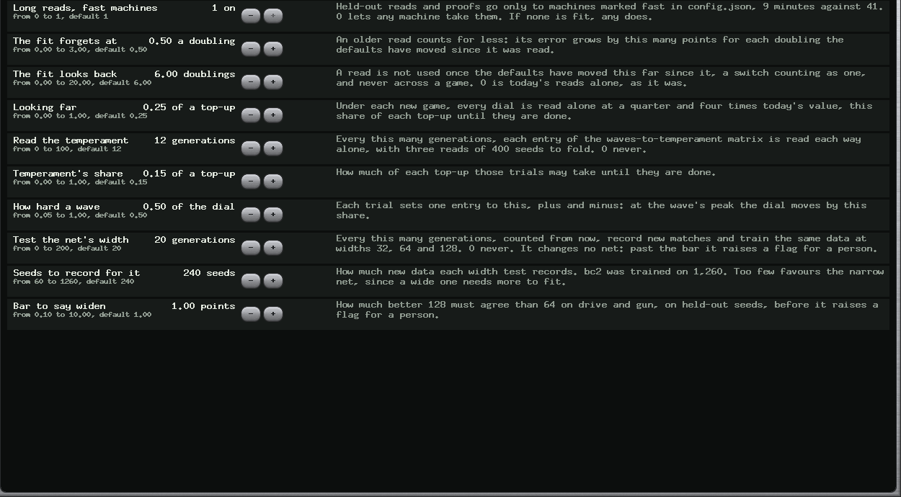

Abstract
Three questions, measured the same evening. Do the waves reach behaviour? Yes. A new census log folds what tanks do over each wave's phase, and a new matrix of twelve dials moves stances along the one wave it should, by up to 18 points of fights. Whether that wins is not shown: kills, deaths and score show nothing clear. Does the net need to be wider? Not yet. On the data it was trained on, 128 beats 64 by 0.85 points of agreement, under the bar of 1.0. What holds up the line? Waiting in the queue, not machine capacity. A winning trial took 57 minutes with 20 of work. Read-ons now go first and long reads go to fast machines, and the first few winners took 25 minutes. Meanwhile a proof passed at z 3.51 and main moved for the first time since the line began, carrying w_pos_fortify 1.5. All of it repeats by itself, with options on Settings, Long run.
Index Terms: phase folding, negative controls, capacity tests, queueing, critical paths.
I. The waves and temperament
A. What was built
| Part | What it does |
|---|---|
| The census log | With waves on, each seed prints what the trial team did in eight bins of each wave's phase: seconds alive, in a fight, each stance, shells, kills, deaths. It changes nothing a tank does |
| The control | bio on, bio_amount 0. Read over 400 seeds: +0.00 +/- 0.00. The same games, so it shows what chance looks like |
| The matrix | Three waves by four dials: engage_odds, press_odds, retreat_armor, longshot_every. Each row is its dial x (1 + the sum of entry x wave), held to a quarter or four times. Twelve dials, all 0, so nothing plays differently. bio_amount stays as it was |
| The Temper tab | Results, Algorhythm, Temper: a grid of waves by behaviours, each read less the control |
Periods are unchanged, at 60, 73 and 86 s: Paul confirmed those.
B. Why two rows moved
The first draft had mass_for and kite_margin. A tank takes a stance in about 3% of its live seconds across all eleven maps, 1.4% on the one map where I first measured it, so anything hung on a stance has little to swing. That may be why the mood has read nothing. Two rows moved to going home and firing, which apply outside fights. Each row was checked to change games.



temper_press_3 at -0.5, less the control. Pressing moves by 17 points of fights on the 86 s wave, the one this entry follows.C. What it found
Each cell is a wave's high less its low, less the control. Errors in brackets.
| Read | Plays | Pressing, on its own wave | Massing, on its own wave |
|---|---|---|---|
| Mood as it stands, 0.25 | 2,544 | +1.4 (+2.3), +1.4 (+2.3), +1.3 (+2.0) | |
| Mood at 1 | 1,200 | +4.8 (+7.0), +5.9 (+8.1), +3.8 (+4.9) | |
temper_engage_1 +0.5 | 165 | +9.0 (+6.6) | |
temper_press_1 +0.5 / -0.5 | 165 | -14.0 (-6.3) / +17.5 (+8.7) | |
temper_press_2 +0.5 / -0.5 | 165 / 246 | -15.1 (-8.0) / +16.1 (+10.1) | |
temper_press_3 +0.5 / -0.5 | 165 / 372 | -18.6 (-9.2) / +16.7 (+11.5) |
It does what it was built to do. The sign flips with the entry's sign, and the large effect is on that entry's own wave.
It also shows two things I had wrong or did not know. The mood makes a tank more careful at its high, not bolder, though earlier reports wrote "how bold". And a smaller effect on neighbouring waves appears in several rows, about 4 to 7 points, which the design did not ask for. It may be that the waves' overlap is not even over a match; I have not tested that.
Whether it wins is a different question, and the answer so far is no sign of it. Kills and deaths have no pattern a reader should trust: some cells pass two errors, as one in twenty will. Scored over 400 seeds, the mood at 0.25 reads -0.58 +/- 0.44 and at 1 reads +0.38 +/- 0.46. The retreat and trigger rows show no clear behaviour change yet, on few reads, and the retreat row is damped: w_smooth at 0.05 lets through only 5% of retreat_armor.
D. The transform
It reads the waves but cannot express temperament: its outputs are a move and a confidence. Its wave columns are 18 of 942 numbers, and only 18 of 106 training reads had waves on. So the matrix came first. Adding a boldness output would need a new file format and retraining, and is not built.
II. The width
Same data as bc2, 52 million samples from 1,260 seeds, held-out seeds 9001140 to 9001259, one training each, on calber:
| Width | Drive | Gun | Mortar | Time |
|---|---|---|---|---|
| 32 | 67.1% | 64.6% | 89.0% | 6 min |
| 64, as it is | 67.7% | 65.7% | 90.0% | 6 min |
| 128 | 68.7% | 66.4% | 90.4% | 8 min |
128 over 64 is +1.0 on drive and +0.7 on gun, +0.85 together, under the bar of 1.0, set before reading. A small steady gain, no sharp knee. Each is one training: how much a second training at the same width would differ was not measured, so 0.85 should not be read closely. The test is about copying. The Scholar trails Fleet by about 57 points a seat, and one point of agreement will not close that.
This data is from an older game. Future tests record new matches.
III. The bottleneck
| Class, from 08:00 | Jobs | Wait, median | Run, median | Lane-hours |
|---|---|---|---|---|
| New trials | 869 | 10.1 min | 2.0 min | 36.8 |
| Read-ons | 489 | 10.2 min | 1.5 min | 16.4 |
| Held-out reads | 70 | 0.6 | 9.7, p90 33 | 17.1 |
| Builds | 124 | 5.8, p90 15 | 0.4 | 1.1 |
The lanes were never idle, so depth was all waiting. A winner passes through several read-ons, and each sat ten minutes behind trials that had shown nothing. The fix is order, not ratio. Changing the share of trial kinds would not have helped: the queue's order was first come.
Machine speed differs 4.5 times, 1.4 s a seed on macmini against 6.2 on columbia, and any machine took a long read. A 400-seed job on columbia took 38 minutes, and a slow machine in a long read was the last to build a new commit, holding up the proof.
| Change | Before | First 45 minutes after |
|---|---|---|
| Read-ons go ahead of new trials: read-on wait | 10.2 min | 0.7 min |
| Long reads on macmini, saskatchewan, boburner: held-out run p90 | 33 min | about 10 min |
| A winner with read-ons, first read to pass | 57 min (17) | 25 min (3) |
| All machines built, added to done | up to 29 min | 10 min (1) |
| Queue depth, 4 to 2 a machine; CPU jobs an hour | 119 | 115 |
Those after-numbers are few, and from under an hour. Throughput is within noise of before. New trials still wait 10 minutes, since read-ons now go past them, and that is the point: what has shown something goes first.
One real waste is not a queue: boburner-cuda, a GTX 1070 Ti, has done nothing since 07:55, because Crucible is switched off on that machine. It is a setting, not a fault, and I left it for a person.
IV. Main moved
At 20:07 the line at 286338b read +1.43 +/- 0.41 over 800 seeds, z 3.51, and the fix to a passed proof landed it. Proofs that evening read +1.97, -0.07, +0.24, +1.43. Main now has w_pos_fortify 1.5 and base_r 6.15. The line has moved on to 0.75, a find the fit's new memory pointed at, read by the ordinary road at +1.34 +/- 0.63.
V. Over many generations
Settings, Long run. Each is live at the next plan.

| Part | Every | Does |
|---|---|---|
| Temperament | 12 generations | Reads each entry each way, with three reads of 400 seeds to fold |
| Width | 20 generations, counted from today | Records 240 seeds, trains 32, 64 and 128, and flags a person past the bar. It changes no net |
| Far read | each new game | Each dial at a quarter and four times |
| The fit's memory | always | Older reads, trusted less with drift |
| Long reads on fast machines | always | With a switch |
VI. Threats and what is open
A matrix entry can promote itself, by the ordinary road. w5490, temper_retreat_1 at -0.5, passed its held-out reads at +0.13 with the bar at z 0.95. If it lands, it turns bio on across the line, and only the proof stands behind that. Generations are landing on small reads: the search has now flipped escort off and back on, and those commits' messages say "no change" for a switch, which is wrong and not yet fixed. The plan was live before the fleet had the dials: for about two minutes it asked for trials a binary could not read. One was caught in the queue and removed, and a guard now prevents it. The width watch's 240 seeds lean narrow: a wide net needs more data than that. The scheduled watch has not run through once: its parts have, by hand, on a real GPU, and in checks.
Not done: reading the rest of the first round's trials, a boldness output on the transform, and the two flaky sftp tests, which still fail in about one run in three.
VII. Reproducing this
Q=~/code/treadcore/build/queue/grove
python3 -I tools/temperament.py $Q # every grid
python3 -I tools/plans/board-check.py # the rounds, the watch, long reads
python3 tools/fleet-tune.py $Q width_every 0 # any option, as the page does